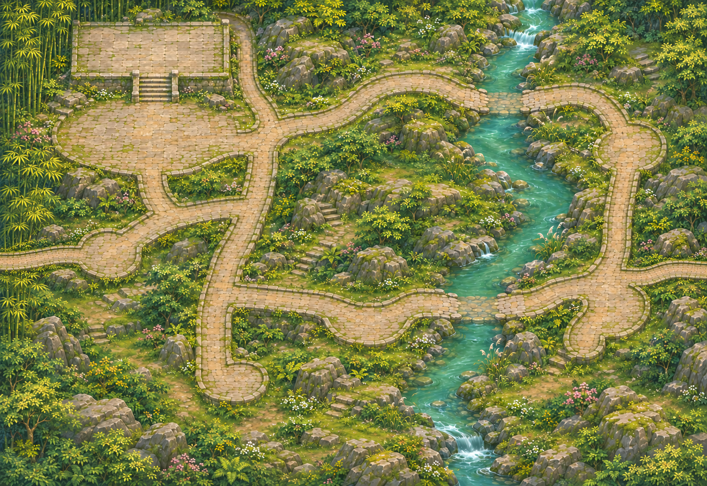

<!doctype html><meta charset="utf-8"><title>听雨林 · 地形校对</title><style>body{margin:0;background:#eee}main{position:relative;width:1600px;height:1100px}img{position:absolute;width:1600px;height:1100px}.grid{position:absolute;inset:0;background:repeating-linear-gradient(0deg,transparent 0 99px,#f44b 99px 100px),repeating-linear-gradient(90deg,transparent 0 99px,#f44b 99px 100px)}span{position:absolute;background:#fff9;color:#800;font:bold 16px monospace;padding:2px}</style><main><div class="grid"></div><script>for(let y=0;y<1100;y+=100)for(let x=0;x<1600;x+=100){let s=document.createElement('span');s.style.left=x+'px';s.style.top=y+'px';s.textContent=x+','+y;document.querySelector('main').append(s)}</script></main>
<style>canvas{position:absolute;inset:0;pointer-events:none}</style><script src="../../navigation.js"></script><script src="../../forest-map.js"></script><script>const c=document.createElement('canvas');c.width=1600;c.height=1100;document.querySelector('main').append(c);const p=c.getContext('2d');p.fillStyle='#40dfc84c';for(let y=0;y<1100;y+=4)for(let x=0;x<1600;x+=4)if(ForestMap.walkable(x,y))p.fillRect(x,y,4,4);p.fillStyle='#ff26ec';for(const n of [...ForestMap.mines.map(n=>n.approach),ForestMap.doctor.talk,...ForestMap.exits]){p.beginPath();p.arc(n.x,n.y,6,0,7);p.fill();}</script>
